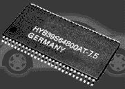
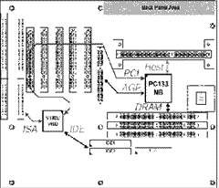
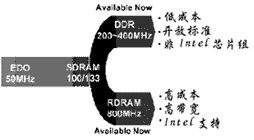
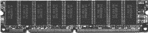

|
| 当前位置：电脑报电子版 > 1999 年 > 26 期 > 硬件周刊 > PC133向我们走来 |
| 《 PC133向我们走来 》 |
| 一年前，AMD、Intel和威盛等公司推出100MHz外频的CPU和主板芯片组后，电脑由66MHz外频时代进入了100MHz外频时代，Intel公司还推出了PC100内存规范，指导内存厂家按照PC100内存规范生产符合要求的内存，这一切的主动权都掌握在Intel的手中。 然而事隔一年多，疯狂的CPU厂商将CPU主频迅速推进到了550MHz，而内存却依然在100MHz的外频下慢吞吞地运行，虽然有超频爱好者将外频从100MHz一直超到了133MHz甚至是153MHz，但Intel公司却依然在100MHz的外频下踏步不前，潜心开发自己的820芯片组和与之配套的RDRAM（Rambus DRAM）。 市场需要更快的内存。这次又让非Intel阵营抓住了机会，威盛公司纠集了一大群芯片制造厂商如Micron、NEC、三星、三菱、现代、日立、西门子、富士通、LG、东芝、IBM（当然Intel公司没参加），共同制订了一套PC133内存的规范。 一、PC133内存规范简介 既然被称为PC133，那当然是延用了PC100的大部分规范：168线的SDRAM（以后会有184线的DDR SDRAM）、3.3V的工作电压、要求内存带有SPD（Serial Presence Detect），所谓SPD是一个有8个引脚的EEPROM，在内存条上那个比米粒大一点的芯片就是它。内存条制造商将该内存条所使用的芯片基本信息预先写入这颗EEPROM，使系统可以通过SPD正确识别内存，从而使用正确的方法来驱动它。如果没有SPD，系统BIOS只得通过检测或猜测的方法来识别该内存的基本信息，容易造成系统不稳定。内存条电路板建议使用6层板，但平时大家使用的所谓PC100内存条中很少有6层板的，基本都是4层板。相对于PC100来说，PC133规范的最大改变是速度提高了。PC100中要求内存芯片至少是10ns的，在PC133中将这一标准提高了7.5ns，要求在133MHz时最好能达到CAS=2，图1所示就是HY的7.5ns PC133内存芯片。7.5ns只是PC133的最低要求，在实际使用中会大量出现7ns的内存。 和PC100内存一样，生产PC133内存的厂商有自己独立的产品代号，没有统一的性能指标注解。 在PC133规范中对内存的各项电气性能作出十分详细的要求，共有几十页的内容。对工作时钟、温度、大气压力、湿度、引脚的定义、SPD都有十分详细的说明。大体上和PC100规范差不多，这里就不一一介绍了。 目前，主要内存芯片厂商对生产PC133内存芯片达成了共识：在现有PC100 内存条的基础上将8ns的芯片颗粒换为7ns，即可完成从PC100到PC133的升级！估计随着生产工艺的提高和检测手段的完善，相对来说难度不算很高，成本也相差无几。另一方面，内存芯片的生产工艺也正在由0.25微米向0.2微米过渡，这样有利于进一步的降低成本，提高内存芯片的频率，预计0.175微米～0.15微米的制造工艺可以在今年第四季度正式量产，那时会不会出现PC200呢？ 二、你需要PC133吗？ 我们为何需要PC133内存？也许有人认为，因为PC133比PC100快33％呀！其实这只是理论的速度，在实际应用中，并没有这么大的差距。笔者认为，促使PC133产生的主要因素是AGP4×的需要。 随着图形应用软件尤其是游戏的发展，显卡与CPU及内存的数据交换量越来越大，AGP以66MHz的速度工作，AGP 1×的峰值传送率可达266MB/s，AGP 2×的传输率可以达到532MB/s，而AGP 4×的理论传输率为1.066GB/s。66MHz总线的最大传输率为532MB/s，在这种环境下AGP 4×无法发挥作用；使用100MHz总线时，内存的最大数据交换率可以达到800MB/s，这可能会使“4×"发挥一些威力，但也是远不够的；如果使用了133MHz的总线，内存的数据交换率可以达到1GB/s，已经基本可以满足AGP4×传输率的需要了。在AGP4×、133MHz外频的配合下，这回显卡公司恐怕不会抱怨AGP的DIME（内存直接使用）速度太慢，PC133内存完全可以在133MHz外频下快速度地执行DIME。 除了AGP4×外，真的想不出还有什么需要PC133？哦！还有超频爱好者，将100MHz外频的CPU用133MHz外频猛超，这对内存要求比较高，8ns的PC100不一定能负担得起，所以人们期望有更快的内存，超频爱好者的步伐永远走在CPU和内存速度之前。 三、支持PC133的主板及CPU PC133规范是由威盛公司领头制定，在规范中所提到支持PC133的主板芯片组当然首推自己的VIA Apollo Pro 133 芯片组。目前已有众多的主板厂商开始生产采用VIA Apollo Pro 133 芯片的主板，VIA设计的Apollo Pro 133作为BX及820芯片组的替代产品。支持PC133 SDRAM以及之后的PC133 DDR－SDRAM，而不是昂贵的RDRAM。Apollo Pro 133提供了PentiumⅢ（对于所有的超频者当然还有PentiumⅡ）在133 MHz 外频下稳定运行的平台。图2是Apollo Pro 133主板的结构示意图。 Intel一直没有声明支持PC133的规范（毕竟是别人制订的东西），实际上，BX芯片组在133MHz外频下也运行得很好（很多BX 2.0的主板在133MHz下使用了4分频），所以也能用PC133的内存。而Intel最近刚推出的面向低端的810芯片组是一种很奇怪的东西，集成度相当高，声卡、显卡、网卡、Modem一锅端，还为此专门设计了一个AMR插槽。但它也并未正式宣布支持PC133，不过听说810E这个版本的芯片组会支持133MHz。 在CPU方面，到目前为止，还没有133MHz外频的CPU出现，PC133是由非Intel阵营提出来的，而AMD的K6－2、K6－Ⅲ都还没有推出133MHz外频的版本，Intel也似乎并不急于推出133MHz的PⅢ，而是想等820芯片组上市时，一起推出采用0.18微米工艺、133MHz外频的PⅢ，所以说在短时期内PC133不会有133MHz外频的CPU配合，除非你去超频使用。 四、PC133的未来 由于PC133的制造工艺和成本较PC100并没有太大变化，所以得到了内存厂商的广泛支持，但是由于缺乏老大哥Intel公司的支持，似乎有些底气不足。 而Intel似乎铁了心要将内存引向RDRAM，然而RDRAM的价格是PC133内存的两倍以上，这是阻碍RDRAM进入市场的主要障碍。另外，Intel正在开发中的820芯片组在与RDRAM的配合上还存在着一些问题。总之，在今年9月以前，820芯片组是不会发布的，RDRAM当然也不会走向市场。从速度上看，PC133没有RDRAM快，但别忘了还有DDR SDRAM（Double Data Rate SDRAM，双倍速率SDRAM），所以以后将会是DDR SDRAM与RDRAM之争。从内存厂商方面来看，几乎所有大厂都不敢将赌注全部押在某一项产品之上，而是采用脚踩两条船的方法。图3是三星公司的发展计划，DDR和RDRAM齐头并进。 从短期来看，PC133会占据一片相当大的市场，一旦Intel公司推出自己下一代CPU和内存规范后，PC133的寿命也将结束，在PC133寿命结束前DDR SDRAM将会推向市场，会得到广大非Intel阵营的支持。之后RDRAM将依靠着Intel的支持，将成为下一代内存的标准。目前PC133内存主要有Micron的MT48LC8M8A2TG －75、东芝的TC59S6408BFT －75、TC59S6404BFT －80A和三星的KM48S8030CT －GA等，凡是生产内存的大公司基本上都推出了PC133内存。图4是SEC（三星）的PC133内存。 （江苏 徐锋） |
| 下载本期推荐软件 | 页 首 |
| 《电脑报》版权所有，电脑报网站编辑部设计制作发布 |